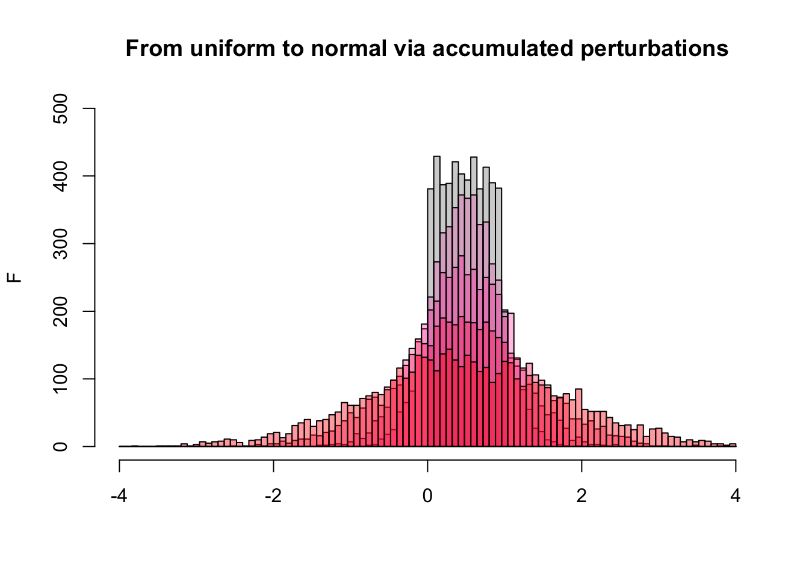
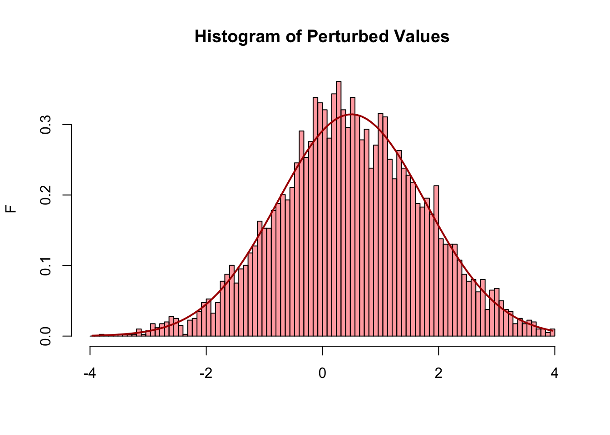

This Quarto document demonstrates a document that is rendered to html in the ./docs subdirectory, whereupon it becomes visible as a static webpage in the “site” that is associated with your GitHub repository - on github.io. To achieve this:
Let’s assume your name is Kronecker, you are working on a GitHub repository called poiema, and you author and edit a Quarto document called IntegerCatechism.qmd. However, you don’t keep it in the usual location ./src/qmd, but you place it into the ./docs directory of your project, to publish it.
The ./docs/ directory contains a configuration file: ./docs/_quarto.yml which contains a line: output-dir: . This overrides the default configuration (which renders into ./out) and directs Quarto to render your IntegerCatechism.html file and a folder containing its images and other assets into the ./docs/ directory.
After rendering, you commit all changes in the ./docs/ directory to git, and push everything to your GitHub repository.
When you do this for the first time, you need to trigger the creation of your “site” through your repository’s Settings. Access them from your main repository page, find the Pages heading in the left-hand menu, make sure that the Build and deployment is set to “Deploy from a branch”, in the Branch menu select “main”, and select “/docs” as the folder. Then click Save. It may take a minute or two until your .html is available. This setting is recorded, you only need to do this once.
GitHub finds the .html files contained in your repository’s /docs and its subdirectories, and makes them accessible. In your case, this would be the URL https://kronecker.github.io/poiema/IntegerCatechism.html.
This is the process I followed here.
1 The Central Limit Theorem (CLT)
Normal distributions occur everywhere in nature. Exactly why has only been proven in 1901, by Aleksandr Lyapunov who stated the CLT clearly and proved its justification:
Let \(X_1, X_2, \dots, X_n\) denote a statistical sample of size \(n\) from a population with expected value (average) \(\mu\) and finite positive variance \(\sigma^2\), and let \(\bar{X}_{n}\) denote the sample mean (which is itself a random variable). Then:
Intuition
This means: If we take many independent observations from the same population, then average them, the distribution of those averages will look more and more like a bell curve - or “Gaussian Distribution” - as the sample size grows — no matter what the original population looked like (as long as it has a finite variance).
One way to arrive at this, is through the accumulation of small errors, or fluctuations, the result of many interactions with a constantly changing context.
2 Modelling the CLT by random fluctuations
Here is an example. We draw 5,000 samples from a uniform distribution, using the R function runif(), and plot that as a histogram. The values are uniformly distributed between 0 and 1, and the histogram bars all reach approximately the same height.
Then we add small fluctuations to each of the original values - something positive or negative, less than 5% …, and since positive and negative perturbations are equally likely, they average out to about zero, when you look at the entire population. But that does not mean the original values all stay in place. If I do that 100 times, the histogram of the result starts getting peaked at ~0.5, and starts spreading out at the sides. I can repeat this, 200 times, 500 time, 1000 time more - every time plotting a new histogram (overlaid with slightly different colors, for clarity), and as a result, the histogram begins to approximate a normal distribution.
(Technically I am convoluting my uniform distribution with Gaussian noise.)
Here it is in code:
set.seed(271828)n <-5000# number of pointsx <-runif(n) # initial set of points: uniform distributionxa <-4# boundaries for the histogram: positive ...xi <--xa # ... and negativebrk <-seq(xi, xa, len=101) # histogram bin limitshist(x, breaks = brk,col ="lightgray",main ="From uniform to normal via accumulated perturbations",xlab ="",ylab ="F",xlim =c(xi, xa),ylim =c(0, 500))# Now add our perturbations: 100 random values, uniformly distributed# between -0.05 and 0.05 added to each number in x. These are vectorized# operations in R - they are fast. Then we overlay the new histogram.x <- x +rowSums(matrix(runif(n*100, -0.05, 0.05), nrow=n))hist(x[x>xi & x<xa], breaks = brk, col ="#FF00AA33", add=TRUE)# Note: for display we clip the values to lie between the bounds we are# considering for our histogram: x[x>xi & x<xa]. If we don't# do that, sooner or later a value would stray outside the bounds# and hist() would throw a tantrum. My, my.# We repeat this with 200 perturbations ...x <- x +rowSums(matrix(runif(n*200, -0.05, 0.05), nrow=n))hist(x[x>xi & x<xa], breaks = brk, col ="#FF009944", add=TRUE)# ... 500 ...x <- x +rowSums(matrix(runif(n*500, -0.05, 0.05), nrow=n))hist(x[x>xi & x<xa], breaks = brk, col ="#FF005555", add=TRUE)# ... and 1,000. That's our final histogram.x <- x +rowSums(matrix(runif(n*1000, -0.05, 0.05), nrow=n))hist(x[x>xi & x<xa], breaks = brk, col ="#FF001166", add=TRUE)

As you can see, the perturbations cause the distribution to become rounded, with a peak at the mean of the original distribution: at 0.5. However these are the “same” 5,000 points we started with, we just added a few random positive and negative numbers to each of them.
3 Normal Distribution and Perturbations
Are the 5,000 values now normally distributed?
# assign the hist() output to myH, so we can get at the values with which# the plot was constructed.myH <-hist(x[x>xi & x<xa], breaks = brk, col ="#FF001166",freq =FALSE,main ="Histogram of Perturbed Values",xlab ="", ylab ="F",xlim =c(xi, xa))points(myH$mids, # using the histogram-bin midpoints as the x-values of# our curve, and computing the y-values with dnorm()dnorm(myH$mids, mean =mean(x), sd =sd(x)),col ="#AA0000",type ="l",lwd =2)

The points() function overlays points over a previous plot, the parameter type = "l" connects the points with line segments. The function dnorm() evaluates a normal distribution of the form
\[
f(x) = \frac{1}{\sqrt{2\pi\sigma^2}}
\exp\!\left( -\frac{(x - \mu)^2}{2\sigma^2} \right)
\] … where \(\mu\) is the mean of our perturbed values, and \(\sigma\) is their standard deviation. Note that the curve is defined by these two numbers only, the 5,000 individual values that determine the heights of the histogram bars do not matter - this is not a curve fit. It turns out, that the actual points are correctly described by the mathematical relationship, without any further assumptions.
Francis Galton expressed this beautifully:
I know of scarcely anything so apt to impress the imagination as the wonderful form of cosmic order expressed by the “Law of Frequency of Error”. The law would have been personified by the Greeks and deified, if they had known of it. It reigns with serenity and in complete self-effacement, amidst the wildest confusion. The huger the mob, and the greater the apparent anarchy, the more perfect is its sway. It is the supreme law of Unreason. Whenever a large sample of chaotic elements are taken in hand and marshalled in the order of their magnitude, an unsuspected and most beautiful form of regularity proves to have been latent all along.